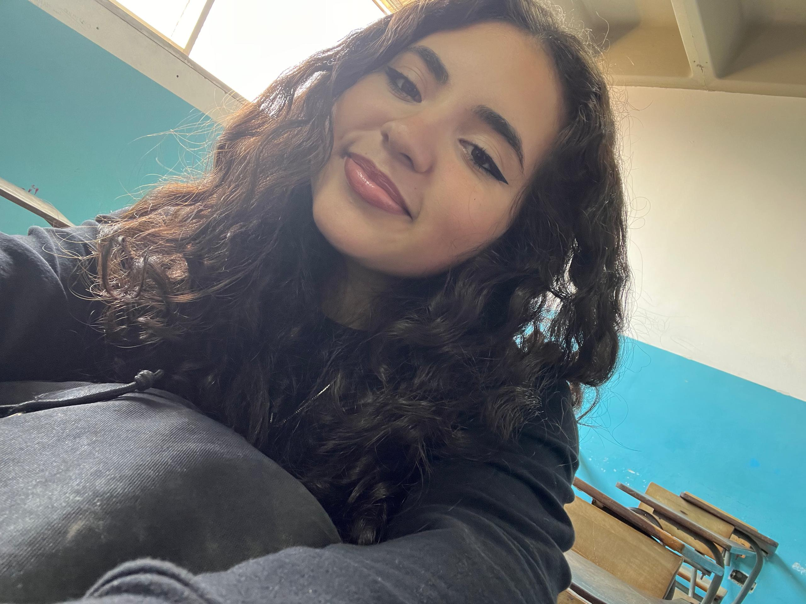

Mi nombre es Astrid Meléndez y mi historia comenzó un 3 de octubre 2007. Crecí en un hogar donde el respeto y la unión familiar siempre fueron el centro de todo, valores que me acompañaron incluso cuando la vida me llevó a cruzar fronteras a una edad muy temprana. Durante seis años, Italia se convirtió en mi hogar, una experiencia que expandió mis horizontes y me enseñó la importancia de la adaptabilidad antes de regresar a mis raíces. Al volver a Venezuela, mi reencuentro con mi antiguo hogar en Montaña Alta marcó el inicio de una etapa de profunda reconexión y crecimiento. Bajo el cuidado de mi madre, reafirmé que la confianza y la responsabilidad son la base de cualquier camino, mientras que la figura de mi padre, a pesar de la distancia física, ha sido siempre esa inspiración que me impulsa a mirar más allá. En este entorno, mi vida se llena de sentido junto a mis primos —quienes han sido como hermanos para mí— y, de manera muy especial, junto a mi hermana de 13 años y hermanitos morochos de 11, quienes representan una parte fundamental de mi mundo y de mi día a día. El año 2022, cuando regresé, representó un gran nuevo comienzo para mí. Fue el momento en que mis intereses se diversificaron, llevándome a explorar la fascinación por la psicología y a fortalecer un vínculo inquebrantable con la música. Para mí, la música ha sido un refugio y una fuente de bienestar constante; tanto así, que hoy guardo el firme deseo de dedicarme a ella de una manera más profunda y creativa, aspirando a ser más que solo una oyente. Tras graduarme, decidí equilibrar esa sensibilidad artística con el mundo técnico, iniciando la carrera de Informática. Actualmente, a mis 18 años, curso el segundo año de mi formación profesional. Cada sistema que estudio y cada nueva meta que alcanzo son el resultado de esa curiosidad que me define: una chispa que me impulsa a entender la tecnología que conecta al mundo sin perder nunca de vista la esencia humana y familiar que me sostiene.
